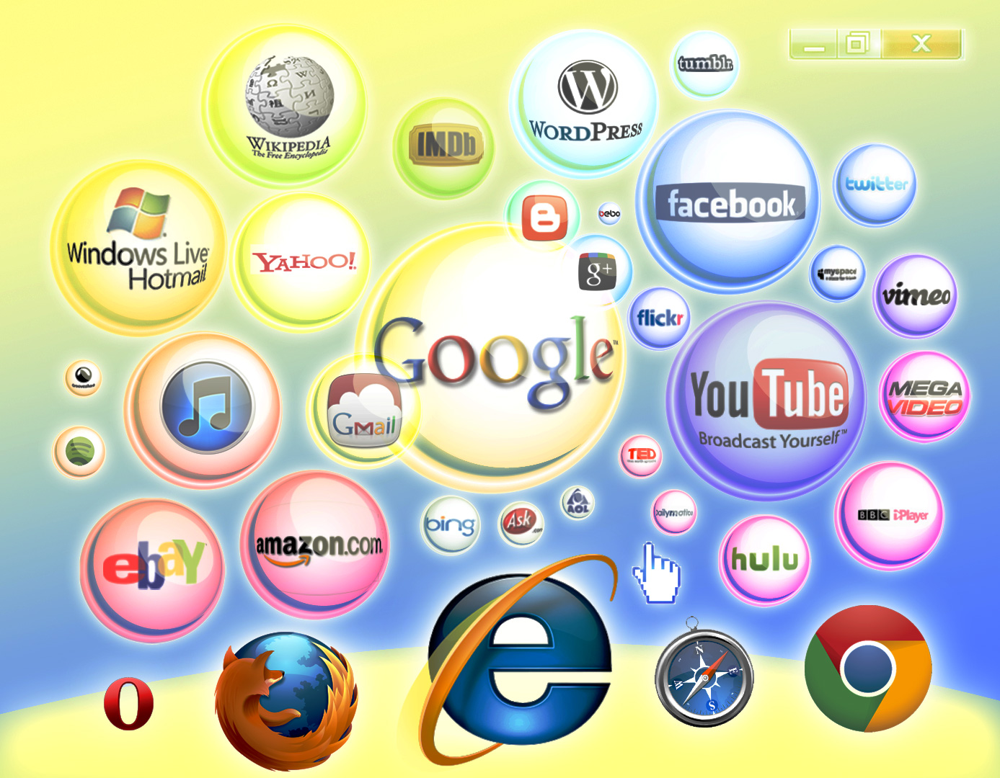
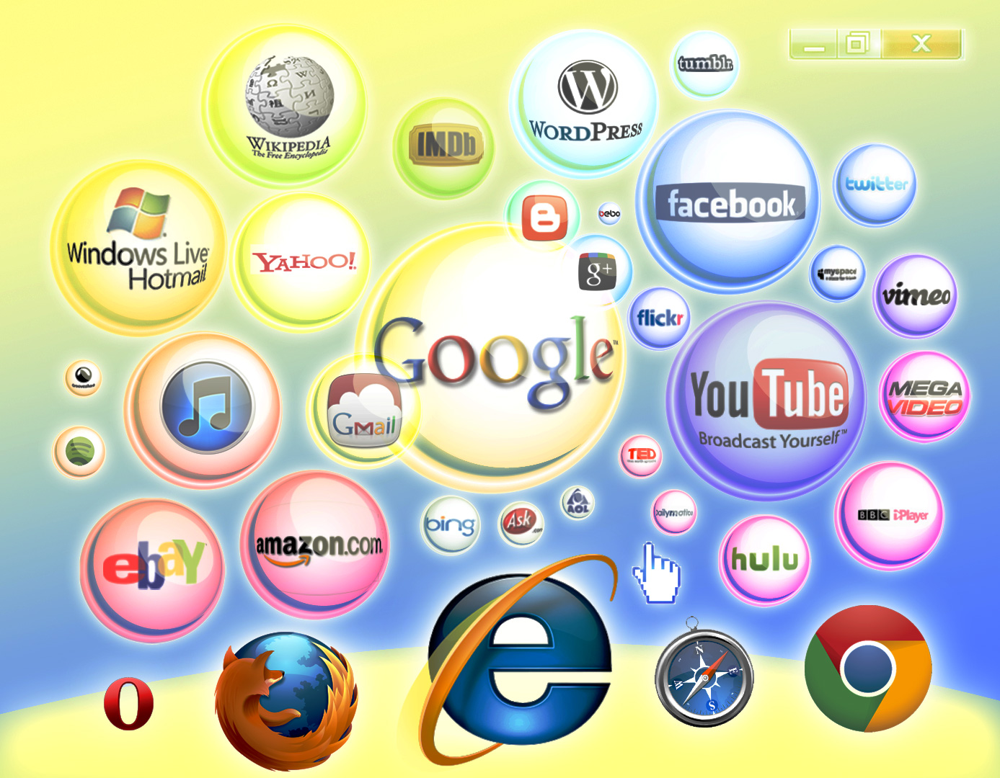

Friendship is a relationship of mutual affection between two or more people. Friendship is a stronger form of interpersonal bond than an association. Friendship has been studied in academic fields such as sociology, social psychology, anthropology, and philosophy. A World Happiness Database study found that people with close friendships are happier.Although there are many forms of friendship, some of which may vary from place to place, certain characteristics are present in many types of friendship. Such characteristics include affection, sympathy, empathy, honesty, altruism,hate mutual understanding and compassion, enjoyment of each other's company, trust, and the ability to be oneself, express one's feelings, and make mistakes without fear of judgment from the friend.
While there is no practical limit on what types of people can form a friendship, friends tend to share common backgrounds, occupations, or interests, and have similar demographics.
(a+b)2=a2 + 2ab +b2
NAOH + HCL -------------> NACL + H2O
- Damodar Pande
- Rana Bahadur Shah
- Bhimsen Thapa
- Rana Jang Pande
- Ranga Nath Poudyal(became prime minister 2 times)
- Chautariya Puskhar Shah
- Rana Jang Pande
- Fateh Jung Shah(became prime minister 2 times)
- Mathabar Singh Thapa
- Jang Bahadur Rana (became prime minister 2 times)
- Bam Bahadur Kunwar Rana
- Ranodip Singh Kunwar
- Bir Shumsher Jang Bahadur Rana
- Dev Shumsher Jang Bahadur Rana
- Chandra Shumsher Jang Bahadur Rana
- Bhim Shumsher Jang Bahadur Rana
- Juddha Shumsher Jang Bahadur Rana
- Padma Shumsher Jang Bahadur Rana
- Mohan Shumsher Jang Bahadur Rana
- Matrika Prasad Koirala (became prime minister 2 times)
- Tanka Prasad Acharya
- Kunwar Inderjit Singh
- Subarna Shamsher Rana
- Bishweshwar Prasad Koirala
- Tulsi Giri (became prime minister 3 times)
- Surya Bahadur Thapa (became prime minister 5 times)
- Kirti Nidhi Bista (became prime minister 3 times)
- Nagendra Prasad Rijal (became prime minister 2 times)
- Lokendra Bahadur Chand (became prime minister 4 times)
- Marich Man Singh Shrestha
- Krishna Prasad Bhattarai (became prime minister 2 times)
- Girija Prasad Koirala (became prime minister 5 times)
- Man Mohan Adhikari (became prime minister 2 times)
- Sher Bahadur Deuba (became prime minister 3 times)
- Prachanda
- Madhav Kumar Nepal
- Jhala Nath Khanal
- Baburam Bhattarai
- Sushil Koirala
- Khadga Prasad Sharma Oli
list of 5 mammals
- Elephant
- Human being
- Polar bear
- cow
- lion
list of 5 birds
- Golden eagle
- Owl
- Peacock
- Himalayan monal
- Tundra swan
- HTTP:
- The Hypertext Transfer Protocol (HTTP) is an application protocol for distributed, collaborative, hypermedia information systems.HTTP is the foundation of data communication for the World Wide Web.
Hypertext is structured text that uses logical links (hyperlinks) between nodes containing text. HTTP is the protocol to exchange or transfer hypertext.The standards development of HTTP was coordinated by the Internet Engineering Task Force (IETF) and the World Wide Web Consortium (W3C), culminating in the publication of a series of Requests for Comments (RFCs). The first definition of HTTP/1.1, the version of HTTP in common use, occurre in RFC 2068 in 1997, although this was obsoleted by RFC 2616 in 1999.
- FTP:
- The File Transfer Protocol (FTP) is a standard network protocol used to transfer computer files from one host to another host over a TCP-based network, such as the Internet.
FTP is built on a client-server architecture and uses separate control and data connections between the client and the server.FTP users may authenticate themselves using a clear-text sign-in protocol, normally in the form of a username and password, but can connect anonymously if the server is configured to allow it. For secure transmission that protects the username and password, and encrypts the content, FTP is often secured with SSL/TLS (FTPS). SSH File Transfer Protocol (SFTP) is sometimes also used instead, but is technologically different.
The first FTP client applications were command-line applications developed before operating systems had graphical user interfaces, and are still shipped with most Windows, Unix, and Linux operating systems.Many FTP clients and automation utilities have since been developed for desktops, servers, mobile devices, and hardware, and FTP has been incorporated into productivity applications, such as Web page editors.
- SMTP:
- Simple Mail Transfer Protocol (SMTP) is an Internet standard for electronic mail (email) transmission. First defined by RFC 821 in 1982, it was last updated in 2008 with the Extended SMTP additions by RFC 5321 —which is the protocol in widespread use today.
SMTP by default uses TCP port 25. The protocol for mail submission is the same, but uses port 587. SMTP connections secured by SSL, known as SMTPS, default to port 465 (nonstandard, but sometimes used for legacy reasons).
Although electronic mail servers and other mail transfer agents use SMTP to send and receive mail messages, user-level client mail applications typically use SMTP only for sending messages to a mail server for relaying. For receiving messages, client applications usually use either POP3 or IMAP.
Although proprietary systems (such as Microsoft Exchange and IBM Notes) and webmail systems (such as Outlook.com, Gmail and Yahoo! Mail) use their own non-standard protocols to access mail box accounts on their own mail servers, all use SMTP when sending or receiving email from outside their own systems.
 
